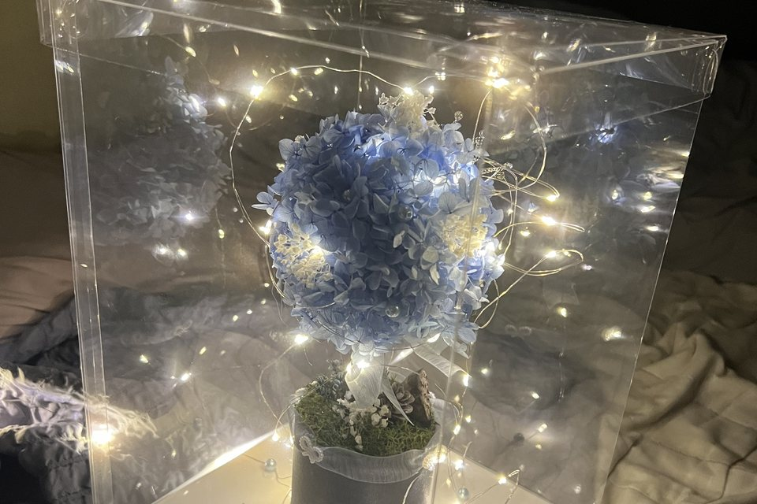
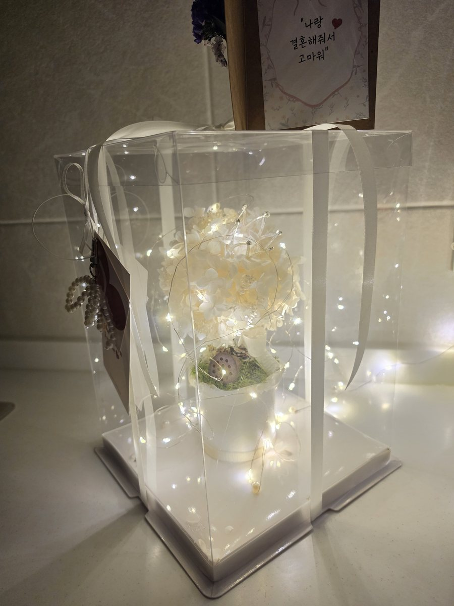
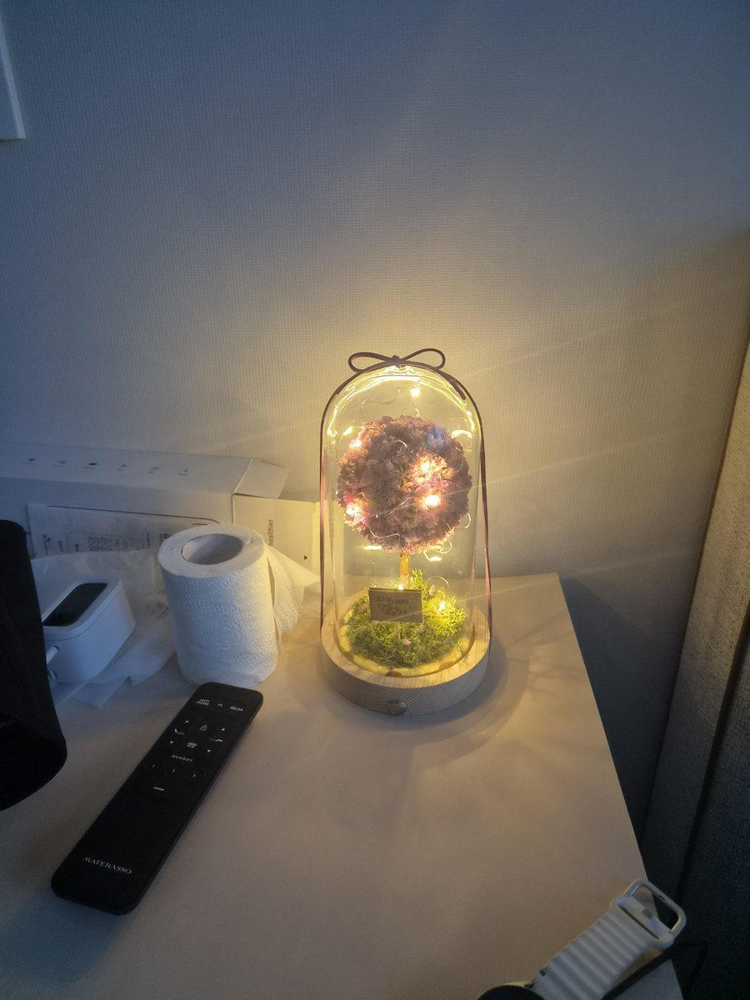
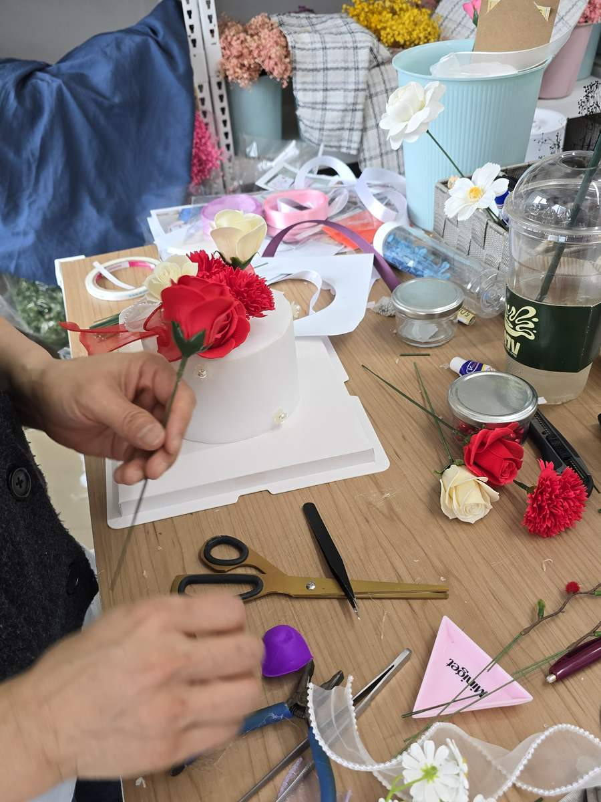

저희는 온라인 주문을 많이 받지만, 직접 찾아오셔서 보고 고르시는 분들도 계십니다. 양쪽을 다 뵈다 보니 보이는 게 하나 있습니다. 같은 상품을 두고도 화면으로 보실 때와 눈앞에서 보실 때의 반응이 꽤 다르다는 것입니다.
사진만 놓고 결정하는 일은 조금 불리합니다
눈앞에 있으면 보고, 만져보고, "이거 어때요" 하고 물어볼 수 있습니다. 화면으로는 그 세 가지가 어렵습니다. 사진과 설명만 놓고 혼자 결정하셔야 합니다.
특히 꽃을 사보신 횟수가 적으면 이 결정이 더 무겁습니다. 옷이나 신발은 실패해도 대충 감이 오지만, 꽃은 기준 자체가 없어서 사진이 실물과 얼마나 같을지를 가늠하기 어렵습니다. 그래서 담아두셨다가 그냥 창을 닫으시는 겁니다. 마음이 부족해서가 아니라 확신이 안 서서요.
멈추게 되는 지점은 대체로 하나입니다
저희가 받은 후기 중에 이런 문장이 있습니다.
"사진과 다를까 봐 걱정했는데 매우 만족스러워요"
앞부분이 주문 전의 마음이고, 뒷부분이 받아보신 뒤의 마음입니다. 저희가 눈여겨보는 건 앞부분입니다. 결국 "이게 맞는 선택인지 확인할 방법이 없다"는 이야기니까요.
눈앞에서라면 물어보고 표정을 보면서 조정할 수 있는데, 화면으로는 그 확인 절차가 빠져 있습니다. 저희도 이 부분이 늘 아쉬웠습니다.
그런데 직접 보신 분들은 반대로 말씀하십니다
여기가 저희가 말씀드리고 싶은 부분입니다.
직접 오셔서 실물을 보고 가시는 분들은 거의 대부분 "사진보다 실물이 더 예쁘다"고 하십니다. 화면으로 보실 때 걱정하시는 방향과 정반대입니다. 프리저브드 꽃은 사진으로는 색과 질감이 다 담기지 않아서, 실제로 보시면 오히려 나은 쪽으로 어긋나는 편입니다.

같은 이야기가 후기에도 반복해서 올라옵니다. 저희 후기 평점은 평균 4.8점을 넘습니다. 이 숫자를 말씀드리는 건 자랑하려는 게 아니라, 화면으로는 확인할 수 없는 그 부분을 먼저 받아보신 분들이 대신 확인해 두셨기 때문입니다.
특히 후기에 올라온 실사 사진을 보시길 권합니다. 저희가 찍은 상품 사진보다 그쪽이 실제로 받으셨을 때에 가깝습니다.

망설이고 계신다면, 이렇게 해보세요
정중히 제안드립니다. 세 가지면 충분합니다.
- 후기 실사 사진부터 보세요. 상품 사진보다 먼저 보시는 편이 확신이 빨리 섭니다.
- 궁금한 걸 구체적으로 물어봐 주세요. 어떤 상품의 어떤 점이 궁금하신지만 적어 주시면 그 부분을 답변드립니다. 색이 사진과 같은지, 향이 어느 정도인지, 포장이 어떻게 나가는지 — 무엇이든 괜찮습니다.
- 꽃 이름은 모르셔도 됩니다. 어떤 사이인지, 어떤 자리인지만 알려주시면 나머지는 저희가 상황에 맞게 제안 드릴게요. 그건 저희가 매일 하는 일입니다.

자주 묻는 질문
Q. 사진이랑 실물이 많이 다르지 않을까요?
A. 직접 보신 분들은 대부분 실물이 더 낫다고 하십니다. 그래도 걱정되시면 후기 실사 사진을 먼저 보시는 걸 권합니다.
Q. 꽃 이름을 하나도 몰라도 주문할 수 있을까요?
A. 가능합니다. 상황만 알려주시면 됩니다. 궁금한 점이 있으시면 그것도 함께 적어 주시면 답변드립니다.
마무리
꽃 선물이 어려우셨다면, 그건 안목이 없어서가 아니라 확인할 방법이 없어서였을 겁니다. 직접 보신 분들의 반응과 먼저 받아보신 분들의 후기가 그 자리를 대신합니다. 망설이고 계셨다면 후기를 한 번 읽어보시고, 그래도 애매하면 궁금한 점을 한 줄만 적어 물어봐 주세요.
TECHA PICKS
이 글과 함께 살펴볼 테차 선물
색상·크기·최종 가격은 스마트스토어 상품 페이지에서 확인해 주세요.
어떤 상품이 맞을지 고르실 때는 상황별 선물 큐레이션에서 상황과 예산으로 좁혀 보실 수 있어요.